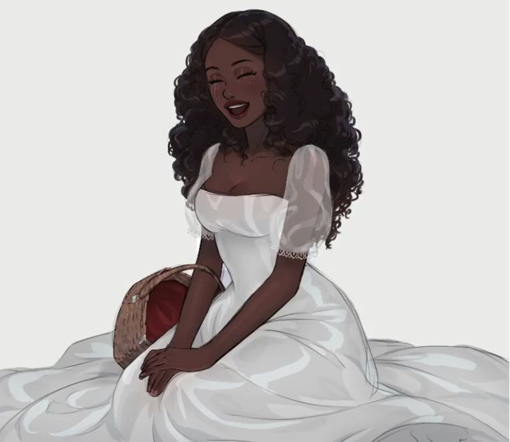
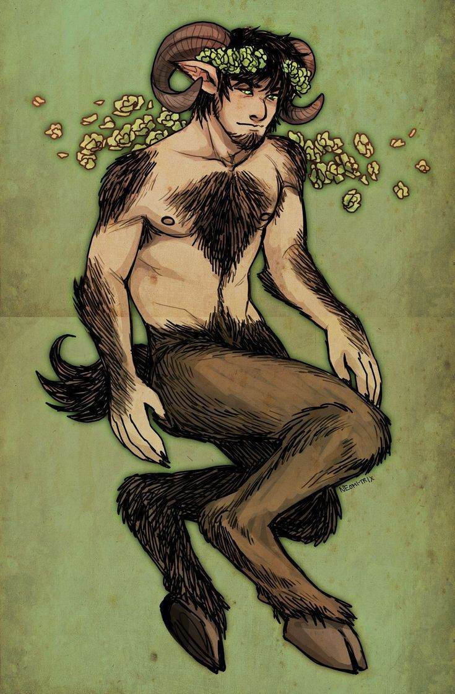

O grupo de recém contratados da Guilda de Resoluções e Comissões, receberam uma comissão para encontrar o cavalo, Barker, de Danipa Silver, abaixo estão os personagens que apareceram na primeira e segunda sessão.

🦋
✦ A Fada Soberba
Gionna
IDADE
23 anos
GÊNERO
Feminino
RAÇA
Fada Borboleta — atualmente morta-viva
ORIGEM
Fronteira da Floresta Protegida
ALINHAMENTO
Neutro · Caótico
ESTADO ATUAL
Falecida
Uma fada borboleta que desejou ser humana por amor — e pagou com o próprio corpo o preço de um feitiço que deu errado. Hoje é apenas osso e memória.

🐐
✦ O Sátiro Corrompido
Escarnos
IDADE
28 anos
GÊNERO
Masculino
RAÇA
Sátiro
ORIGEM
Floresta Protegida
ALINHAMENTO
Caótico · Mal
ESTADO ATUAL
Falecido
Um sátiro que começou roubando livros para proteger sua floresta e terminou corrompido pelo próprio poder que jurou usar em nome da justiça.